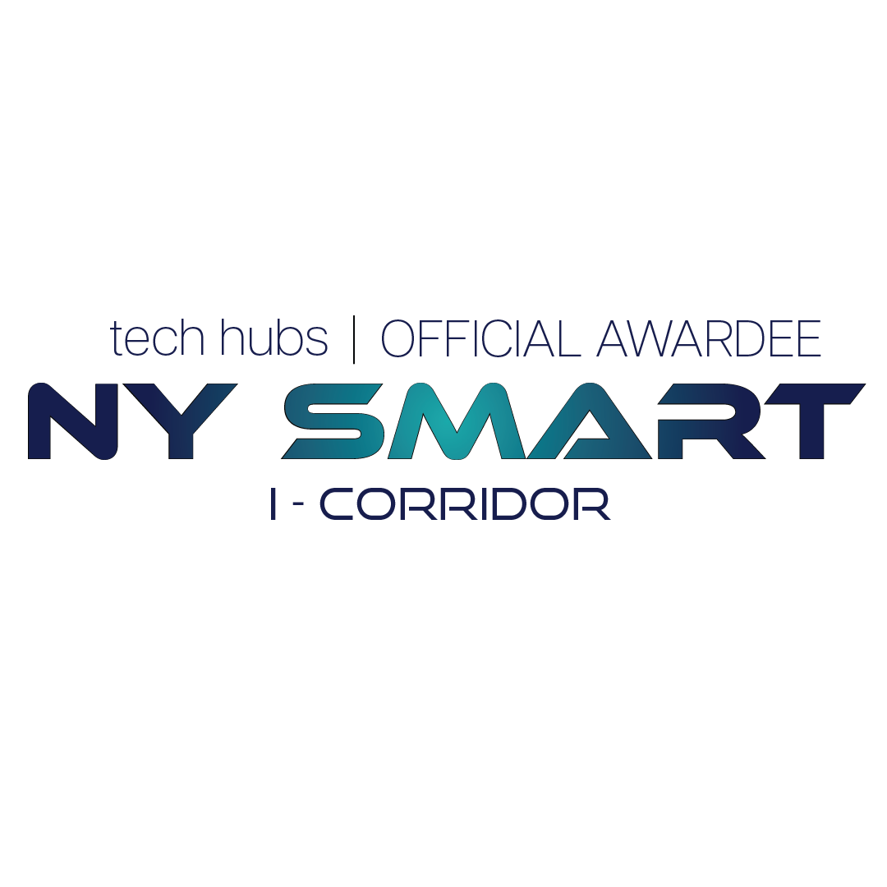
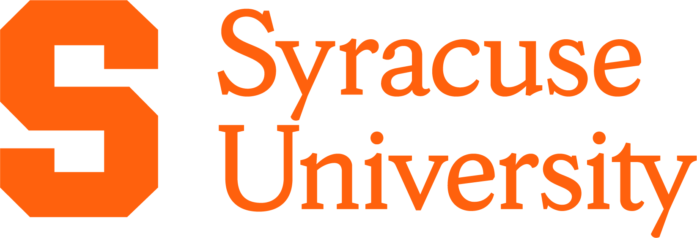

Grants & Updates.
Recent news and updates from the A-STAR Lab. Click an entry to expand it.
Our Humanoid Robotics Research Featured by Syracuse University Today
LabSyracuse University Today featured A-STAR Lab's recent research on humanoid robots learning construction skills from human workers. The story highlights our vision-based perception-and-action framework and its demonstration across 30 construction skills and tasks learned directly from human demonstrations.
Syracuse ECS Highlights Our Humanoid Construction Robotics Research
LabSyracuse University's College of Engineering and Computer Science A-STAR Lab's work on humanoid robots that learn construction skills from human workers. The article highlights our vision-based Perception-and-Action system and its ability to translate human demonstrations into executable robot motions across 30 construction skills and tasks.
A-STAR Lab Receives NY-THRIVE Support for Vision-Guided Robotic Manipulation
GrantA-STAR Lab received $200K in support through NY-THRIVE for the development of a vision-guided robotic manipulation system. The project integrates perception and control to enable a soft-shell robotic gripper to autonomously detect, grasp, and manipulate objects.

New Paper Accepted by Computer-Aided Civil and Infrastructure Engineering
PaperYanxi Liu and Yizhi Liu published a new study in Computer-Aided Civil and Infrastructure Engineering on a perception-and-action system that enables humanoid robots to learn construction skills from human demonstrations and execute them in physical tasks.
Funded Syracuse REU Project on Dual-Arm Kitting and Assembly
GrantA-STAR Lab received support through the Syracuse University REU program for a project on dual-arm robotic kitting and assembly. The project focuses on coordinated manipulation, perception, and task execution for autonomous assembly using a dual-arm robotic system.

Yanxi Receives SUII Graduate Student Travel Award
PaperCongratulations to A-STAR Lab Ph.D. student Yanxi Liu on receiving the SUII Graduate Student Travel Award from the Syracuse University Infrastructure Institute to support her conference travel and research presentation.
Yanxi Receives Syracuse University PAC Travel Grant
PaperCongratulations to A-STAR Lab Ph.D. student Yanxi Liu on receiving the PAC Travel Grant from Syracuse University to support her conference travel and research presentation.
New Conference Paper Accepted to CRC 2026
PaperA-STAR Lab had a conference paper accepted to CRC 2026. The conference will be held in San Antonio, Texas, in March 2026.
Selected for the NVIDIA Academic Grant Program
GrantA-STAR Lab was selected for the NVIDIA Academic Grant Program for our roof-inspection robotics project. The award provides three RTX PRO 6000 Blackwell Max-Q Workstation Edition GPUs and two Jetson AGX Orin Developer Kits to support research on aerial robots with ground mobility and perception.
A-STAR Lab Receives NYSERDA Funding for Human-Robot Collaboration in Building Retrofits
GrantA-STAR Lab is part of a team awarded $1.215 million by the New York State Energy Research and Development Authority (NYSERDA) for the project ”3D-Printed Siding and Human-Robot Collaboration for High Performance Retrofits.“ Yizhi Liu serves as Co-PI on the three-year project, which explores advanced construction technologies for high-performance building retrofits.
A-STAR Lab Receives NSF FRR Award for Our Autonomous Roof Inspection Project
GrantA-STAR Lab and collaborators received a $700K award from the National Science Foundation (NSF) Foundational Research in Robotics (FRR) program for the project ”Endowing Aerial Robots with Ground Mobility and Multimodal Perception for Autonomous Roof Inspection.“ The project will develop an aerial-legged robotic platform that combines flying and walking capabilities with multimodal perception to enable safe and autonomous roof inspection in complex environments.
Nothing matches that filter.
Follow our latest work or join the team.
We welcome inquiries about research collaborations, student opportunities, and industry partnerships.